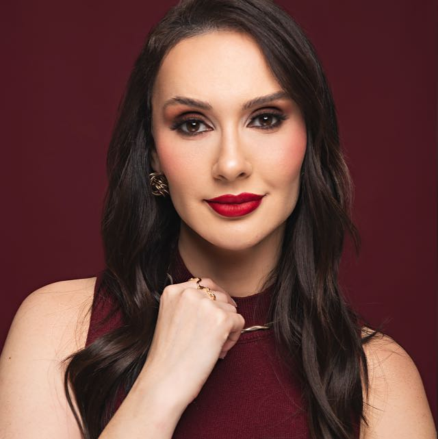

Harmonização Orofacial
Avaliação individualizada do rosto, com plano de tratamento construído em etapas.
Um resultado que respeita sua identidade — sem aspecto de "rosto mexido".
Para quem quer se cuidar sem sair diferente de si mesma.
Harmonização Orofacial · Itu, SP
Harmonização orofacial individualizada, pensada para valorizar quem você já é — não para criar outra pessoa.
Talvez você não esteja cansada.
Talvez seja só o seu rosto que parece estar.
Existe uma diferença entre envelhecer e parecer exausta —
e é exatamente essa diferença que eu trato.

Quem cuida do seu rosto
Biomédica Esteta (CRBM | SP 27988) e especialista em harmonização orofacial, atendendo em Itu.
Não trabalho pensando em transformar rostos. Trabalho pensando em entender cada rosto: suas proporções, suas características, sua história — e a partir disso, decidir o que realmente faz sentido tratar.
Porque o resultado que busco nunca é "o que você fez?".
É "você está tão bem — descansou?"
Filosofia
Cada rosto tem uma identidade. O meu trabalho não é apagar isso — é entender o que está causando aquele aspecto de cansaço ou desalinho, e tratar isso de forma individual.
O objetivo nunca é transformar um rosto. É valorizar o que já existe nele.
Como eu trabalho
Não existe protocolo padrão aqui. Cada avaliação começa entendendo o que o seu rosto precisa — e o plano de tratamento é construído a partir disso, em etapas, no seu tempo.
Avaliação individual do seu rosto — sem pressa, sem protocolo fixo.
Plano de tratamento em etapas, respeitando o que faz sentido agora.
Acompanhamento nos retornos, ajustando o que o rosto pede a cada fase.
Onde podemos começar
Avaliação individualizada do rosto, com plano de tratamento construído em etapas.
Um resultado que respeita sua identidade — sem aspecto de "rosto mexido".
Para quem quer se cuidar sem sair diferente de si mesma.
Suavização de linhas de expressão — testa, glabela e pés de galinha.
Rosto mais descansado, sem perder a expressão natural.
Um bom primeiro passo para quem está começando na estética.
Reestruturação de suporte facial na região do malar e das olheiras.
Devolve harmonia e sustentação onde o cansaço mais aparece.
Para quem sente o rosto "caído" mesmo descansada.
Harmonização labial.
Detalhes a confirmar com a profissional.
—
Transformações
Esta seção está reservada para antes/depois reais, sempre com autorização das pacientes. Conteúdo pendente de envio pela profissional.
No Google
2 avaliações no Google
"A Jaque é uma profissional maravilhosa! ❤️ Desde o primeiro atendimento, me senti muito acolhida e segura. Ela é extremamente atenciosa, cuidadosa e demonstra muito conhecimento no que faz. Além de ser uma excelente biomédica, é uma…"
Avaliação exibida como disponibilizada publicamente pelo Google (trecho — o texto completo exige login no Google Maps).
Avaliação 5 estrelas, sem comentário escrito.
Sem protocolo padrão. Sem pressa. Só uma conversa para entender o que faz sentido para você.
Falar no WhatsApp